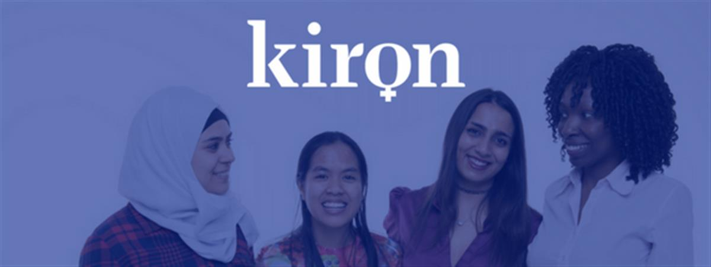
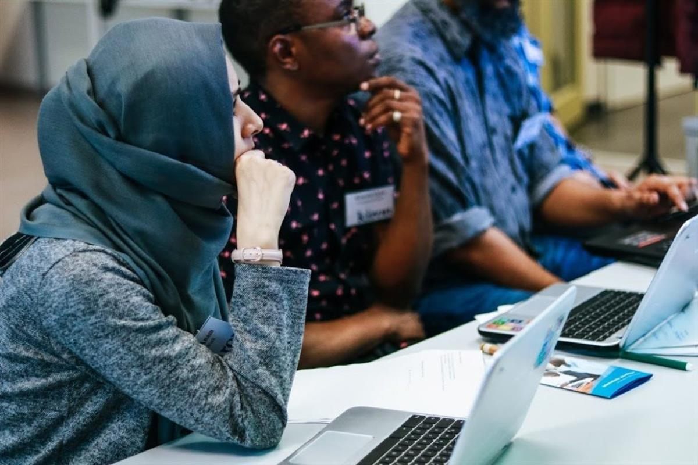
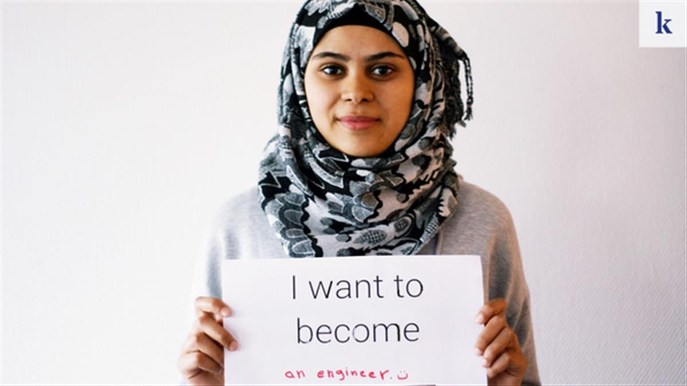
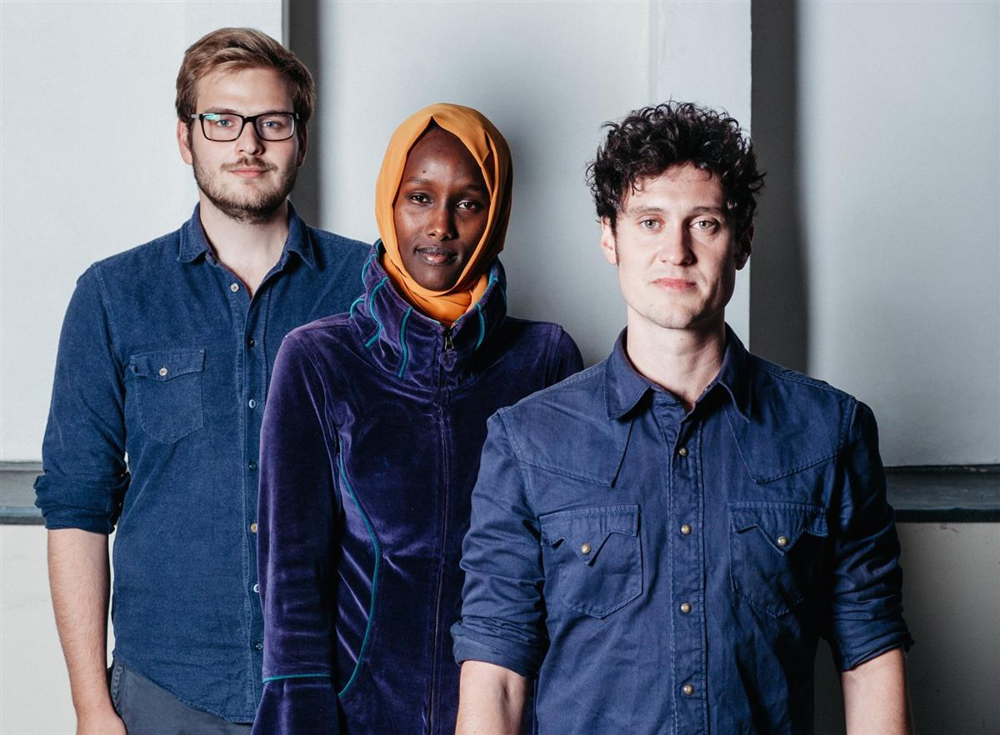
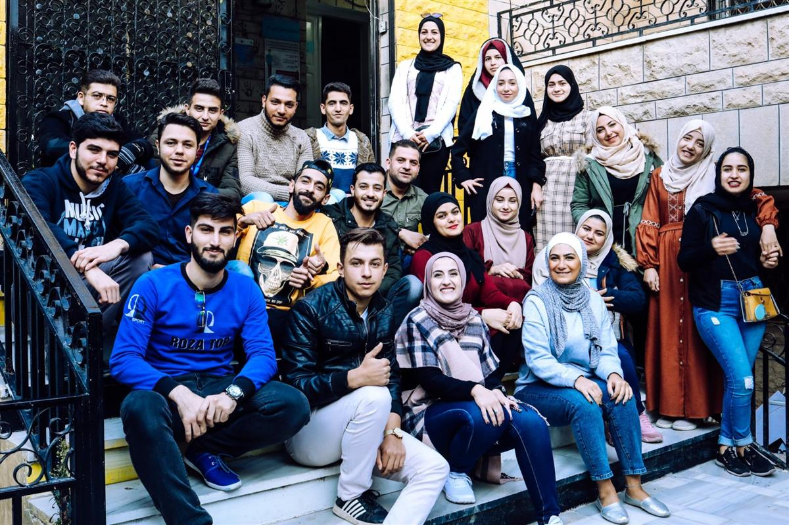

First online university for refugees
SOURCE: ATLAS OF THE FUTURE
Germany (Berlin)
Five years have passed since Berlin-based Vincent Zimmer and Markus Kressler launched Kiron Open Higher Education, the first online university exclusively for refugees, boosted by a handful of volunteers and a crowdfunding campaign.

The pair started a revolution in higher education when they developed a new kind of university that incorporates technological advances that enable online learning. By offering world-class higher education – free of charge – anywhere in the world, they are addressing social justice issues, including income inequality or geographical isolation.

All students need to enrol is refugee status proof from the UNHCR and access to the internet (or the ability to download offline courses when able to get online). The first two years of the university course are made up of Massive Open Online Courses (MOOCs) in engineering, computer science, business administration or social work, all of which will be in English, Arabic, Turkish and soon also in Spanish. The third year allows students to attend a traditional university and attend regular courses.

Partnered with accredited universities worldwide that include Yale, Harvard and MIT, students have the opportunity to finish their program with a regular bachelor’s degree.
Since the coronavirus pandemic paralysed many educational options, degrees have increased again and today, Kiron has 11,000 students from Syria, Jordan, Lebanon and Germany residents.
A real problem they have faced is the lack of Internet connectivity among refugees. That’s why Kiron has partnered with Libraries Without Borders to create The Future is Offline, a program that will provide offline access to those digital learning resources with the aim at fostering integration in host countries and creating long-term perspectives for displaced people.
AtlasAction: Support Kiron Open Higher Education here.
Written by
Lisa Goldapple, Editor, Atlas of the Future (08 October 2020)
Project leader
Vincent Zimmer and Markus Kressler, Co-founders

Kiron Co-founders Markus Kreßler and Vincent Zimmer with student Fatuma

SOURCE: ATLAS OF THE FUTURE